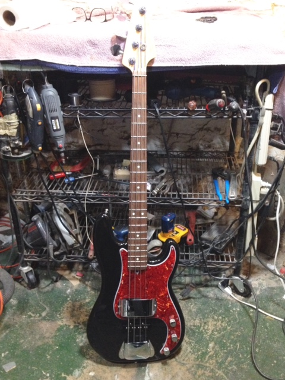

My Guitars
"Maria"
c. 2012 Francisco Domingo Hybrid Classical
This guitar changed my life. First, a little background. I started playing bass guitar when I was 12. I have always had a guitar of some sort around, but bass guitar was always my main thing until I found Maria. In 2012, about six months into moving to Kansas City, I decided I wanted to learn to play an acoustic instrument. I rented an upright bass - I had played a little in college, but not much - and fooled around with that for a month or so. I loved playing it. However, I decided to get a guitar because I thought it would be better for someone who plans to play alone a lot.
I went to "Brookside Guitars" in K.C. and asked for a beginner's Yamaha. The owner said something like, "Yes, people often start with a Yamaha, but please take a listen to these. I just got them in, and I've been very impressed." So, I took a listen to his Francisco Domingo line - a line out of China that purportedly uses traditional design methods. I played a spruce and a cedar model, and preferred the cedar. Then, I even played the cedar model next to the owner's $4k concert guitar, and, while I admit the high end on the expensive one was fuller and more cutting, I thought they both sounded great. Given that the Domingo was less that $300, I knew I couldn't go wrong. I made the purchase. For the next couple of years, I played a lot of classical guitar. I did replace the factory tuners with Rubners. I'm happy I made the change - I thought the factory tuners felt a litle cheap given the quality of the rest of the guitar.
The name "Maria" grew from an interesting conversation I had with a young man while I was at a show. I won't go into it, but that is/was the only name for that guitar!
Electric Guitar
2012 Fender Japan 1952 Telecaster Reissue
In 2013, after having played the classical guitar for about a year, I got an itch to purchase an electric guitar. I remember the evening I bought it. After work, I drove to a local music store where, from prior visits, I knew they had an impressive selection of guitars (impressive in this digital age of limited brick-and-mortar music stores). When I walked in, I already had planned on purchasing a Telecaster. I wanted something basic, yet versatile, dependable, classic, solid. The Telecaster fit the bill.
I went in assuming I would buy a modern Fender USA Telecaster. I played a number of Tele's that evening. I liked the new US Telecasters. They had a nice comfort feature, with part of the back cut away to more comfortably snug against the player's side. But, to my surprise, I liked the sound of the Fender Japan 1952 Telecaster Reissue better. I found it had greater warmth and punch. After haggling with the clerk more than I would these days, I made the purchase. I think it was a decent deal for a new guitar from a store.
I didn't play it too much for a year, but I was happy I had it, in case I felt the desire. These days, I play it more than my classical. I've had some work done on it that I'm pretty happy with. First I put a new pickguard on. It came with a black pickguard. Now it has a tortoise pickguard. I also had a Bigsby put on. Actually, I first put the Bigsby on myself, and I even filed down the "ashtray" bridge-plate with a Dremel so that I would not have to use an adapted bridge plate. Well, the factory saddles did not work with the Bigsby, so I got some brass saddles and had them custom cut by my luthier. Along with that work, I had him reinstall the Bigsby, too, since there was one screw I had some trouble with. About a year later, I had the same luthier replace the electronics with all-metal parts. Oh, and I had a flat jack-plate put on so I can use an L-shaped cable jack. I feel very good about the guitar now, overall, and I look forward to many years of use. As for strings, I use pure nickel 11s - very versatile, and they don't tarnish for a long time.
I have yet to name this guitar.
"Betsy"
2001 Fender USA Hot Rodded Precision Bass

I got this guitar in college at a pawn shop for $500. Really a steal - it would have gone for at least a couple hundred more on Craigslist, even in 2006 when I got it. I really haggled with the clerk at the pawn shop. I remember getting the price lower than what I first told him I would pay, which he said was "way too low." In retrospect, I bet he was trying to hurry and sell it out from under the prior owner before he returned. Oh well.
It's a killer bass. I'm not just saying that. The "hot rodded" part means it is a Precision bass with a Jazz pickup added. I can turn the Jazz pickup on and get a little growl, or I can leave it off for the Precison sound. I happen to like Jazz necks better, but I do like the pickup setup on this monster. Betsy's heavy. Made of solid swamp ash and maple, and, like my Telecaster, even heavy at that. I put jazz-medium D'Addario chromes on her and never change the strings. I like the full sound, and, as a plus, I don't have to mess with the time and money of changing them. I usually play guitar these days, but I get her out now and then.
Oh, I should also add that I had her professionaly set up by some character in South City St. Louis. He did a good job (except one of the pickup plates is a little slanted), but took forever, like three months. I won't go into it.
I have no idea why I named this guitar "Betsy." Just seemed to work for some reason.